FEAPACK Examples
Advanced example #4: Fatigue crack propagation via VCEM.
In this example, FEAPACK is used to determine the path of a crack propagating in an unstable manner. A modified compact tension (CT) specimen is considered, allowing for mixed-mode (mode I and II) fatigue crack growth (as proposed in this paper). The virtual crack extension method (VCEM) is used. In this method, a finite element analysis is performed considering a crack with some predefined initial length. Then, a second analysis is performed, this time considering an arbitrarily small virtual crack extension. From these two steps, the following finite difference is used to compute the strain energy release rate:
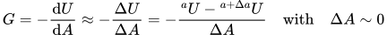where:
- 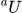 is the strain energy of the system considering the initial crack length.
- 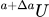 is the strain energy of the system considering the initial crack length plus an additional and arbitrarily small virtual crack extension.
- 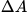 is the change in the crack surface area arising from the virtual crack extension.
Additionally, the strain energy is given by:
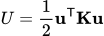where:
- 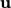 is the global displacement vector.
- 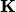 is the global stiffness matrix.
By considering a coordinate system aligned with the crack plane, the strain energy and strain energy release rate may be computed for mode I and II. Once the strain energy release rate has been computed, the stress intensity factors may also be computed, considering a plane stress case, using the following expressions:
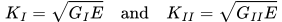Finally, for the prediction of the direction of crack propagation, the change in the current crack angle is computed using the maximum tangential stress (MTS) criterion:
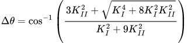Knowing the direction of crack propagation, and assuming an arbitrarily small crack extension, a new finite element analysis can be performed considering the new crack. The process then repeats, resulting in the incremental increase of the crack.
The FEAPACK files for this example can be found here.
Note 1: this example requires Gmsh for Python, which is not bundled with FEAPACK. To install Gmsh run: pip install gmsh.
Note 2: this example requires slight modifications to the source code, as explained below.
Solution via Gmsh and FEAPACK:
A job script named advanced4.py is created. We start by importing the required modules and defining some parameters:
import gmsh
import numpy as np
import feapack.gmsh
import feapack.model
import feapack.solver
import feapack.solver.linearAlgebra
#-----------------------------------------------------------
# PARAMETERS
#-----------------------------------------------------------
# material
E = 210e3 # Young's modulus
nu = 0.3 # Poisson's ratio
# geometry
T = 4.0 # thickness
W = 50.0 # width
H = 48.0 # height
W_s = 18.0 # slot width
H_s = 2.0 # slot height
theta = 60.0 # slot angle
P_x = 10.0 # horizontal hole position
P_y = 11.0 # vertical hole position
D_0 = 10.0 # hole diameter
C_x = 10.0 # extra hole horizontal position
C_y = 7.0 # extra hole vertical position
D_1 = 7.5 # extra hole diameter
epsilon = 0.01 # crack opening distance
# mesh
globalSeed = 1.0
crackTipSeed = 0.1
smoothingIterations = 5
refinementIterations = 1
useQuads = False
# crack
da = 0.5 # crack extension
virtual_da = da/10.0 # virtual crack extension
crack = [0] # initial crack (angles)
We then define the following helper function that rotates the specified global vector, changing the coordinate system from the global one to one that is aligned with the current crack angle:
#-----------------------------------------------------------
# PROCEDURES
#-----------------------------------------------------------
# change in global coordinate system to coordinate system aligned with crack
def rotate(vec_global):
alpha = np.deg2rad(crack[-1])
R = np.array((
(np.cos(alpha), -np.sin(alpha)),
(np.sin(alpha), np.cos(alpha)),
), dtype=np.float64)
vec_crack = np.zeros(shape=vec_global.shape, dtype=np.float64)
for i in range(vec_global.size//2):
v_global = np.array((
vec_global[i*2 + 0],
vec_global[i*2 + 1],
), dtype=np.float64)
v_crack = np.matmul(R, v_global)
vec_crack[i*2 + 0] = v_crack[0]
vec_crack[i*2 + 1] = v_crack[1]
return vec_crack
We define an additional post-processing procedure in order to compute the strain energy, strain energy release rate, stress intensity factor, and crack propagation angle:
# compute strain energy
# if current and previous strain energies are available:
# compute strain energy release rate, stress intensity factor, and crack propagation angle
strain_energy_1, strain_energy_2 = [], []
def postProcessing(u, K): # 'u' is the displacement vector, 'K' is the stiffness matrix
f = feapack.solver.linearAlgebra.spmatmul(K, u) # compute internal forces 'f'
u = rotate(u); f = rotate(f) # change from global to crack coordinate system
strain_energy_1.append( 0.5*np.dot(u[0::2], f[0::2]) ) # compute strain energy (mode I)
strain_energy_2.append( 0.5*np.dot(u[1::2], f[1::2]) ) # compute strain energy (mode II)
if len(strain_energy_1) == 2 and len(strain_energy_2) == 2: # check if current and previous strain energies are available
G1 = abs(strain_energy_1[0] - strain_energy_1[1])/(T*virtual_da) # compute strain energy release rate (mode I)
G2 = abs(strain_energy_2[0] - strain_energy_2[1])/(T*virtual_da) # compute strain energy release rate (mode II)
K1 = np.sqrt(G1*E) # compute stress intensity factor (mode I)
K2 = np.sqrt(G2*E) # compute stress intensity factor (mode II)
dtheta = np.arccos((3*K2**2 + np.sqrt(K1**4 + 8*K1**2*K2**2))/(K1**2 + 9*K2**2)) # maximum tangential stress criterion
crack.append(crack[-1] + dtheta) # add next propagation angle
strain_energy_1.clear() # clear state
strain_energy_2.clear()
As shown below, we generate the finite element mesh using Gmsh and the finite element model using FEAPACK. This function is called multiple times to update the crack. As the script is parameterized, this results in an automatic re-meshing process.
def runIncrement(crack, applyVirtualExtension):
crack = [*crack] # make copy
#-----------------------------------------------------------
# CREATING THE MESH WITH GMSH
#-----------------------------------------------------------
# initialize Gmsh
gmsh.initialize()
# compute crack path
crackPath = [(-W + W_s, H/2.0)]
for phi in crack:
dx = da*np.cos(np.deg2rad(phi))
dy = da*np.sin(np.deg2rad(phi))
crackPath.append((
crackPath[-1][0] + dx,
crackPath[-1][1] + dy,
))
# virtual extension
if applyVirtualExtension:
crack.append(crack[-1])
phi = crack[-1]
dx = virtual_da*np.cos(np.deg2rad(phi))
dy = virtual_da*np.sin(np.deg2rad(phi))
crackPath.append((
crackPath[-1][0] + dx,
crackPath[-1][1] + dy,
))
# crack tip
crackTip = crackPath[-1]
# generate seam
crackSeam = []
for (x, y), phi in zip(crackPath[:-1], crack):
psi = phi - 90.0
dx = epsilon*np.cos(np.deg2rad(psi))
dy = epsilon*np.sin(np.deg2rad(psi))
crackSeam.append((x + dx, y + dy))
crackSeam.append(crackTip)
for (x, y), phi in zip(reversed(crackPath[:-1]), reversed(crack)):
psi = phi + 90.0
dx = epsilon*np.cos(np.deg2rad(psi))
dy = epsilon*np.sin(np.deg2rad(psi))
crackSeam.append((x + dx, y + dy))
# point coordinates
outlineCoords = (
(0.0, 0.0),
(-W, 0.0),
(-W, H/2.0 - H_s/2.0),
(-W + W_s - H_s/(2.0*np.tan(np.deg2rad(theta)/2.0)), H/2.0 - H_s/2.0),
) + tuple(crackSeam) + (
(-W + W_s - H_s/(2.0*np.tan(np.deg2rad(theta)/2.0)), H/2.0 + H_s/2.0),
(-W, H/2.0 + H_s/2.0),
(-W, H),
(0.0, H),
)
holeCoords = (
(-W + P_x, H/2.0 - P_y),
(-W + P_x - D_0/2.0, H/2.0 - P_y),
(-W + P_x + D_0/2.0, H/2.0 - P_y),
(-W + P_x, H/2.0 + P_y),
(-W + P_x - D_0/2.0, H/2.0 + P_y),
(-W + P_x + D_0/2.0, H/2.0 + P_y),
(-W + W_s + C_x, H/2.0 + C_y),
(-W + W_s + C_x - D_1/2.0, H/2.0 + C_y),
(-W + W_s + C_x + D_1/2.0, H/2.0 + C_y),
)
# points
seeds = [globalSeed if (x, y) != crackTip else crackTipSeed for x, y in outlineCoords]
outlinePoints = [gmsh.model.geo.addPoint(x, y, 0.0, seed) for (x, y), seed in zip(outlineCoords, seeds)]
holePoints = [gmsh.model.geo.addPoint(x, y, 0.0, globalSeed) for x, y in holeCoords]
# curves
outlineCurves = [gmsh.model.geo.addLine(outlinePoints[i], outlinePoints[i + 1]) for i in range(len(outlinePoints) - 1)] + \
[gmsh.model.geo.addLine(outlinePoints[-1], outlinePoints[0])]
holeCurves = [
# hole 1
gmsh.model.geo.addCircleArc(holePoints[1], holePoints[0], holePoints[2]),
gmsh.model.geo.addCircleArc(holePoints[2], holePoints[0], holePoints[1]),
# hole 2
gmsh.model.geo.addCircleArc(holePoints[4], holePoints[3], holePoints[5]),
gmsh.model.geo.addCircleArc(holePoints[5], holePoints[3], holePoints[4]),
# hole extra
gmsh.model.geo.addCircleArc(holePoints[7], holePoints[6], holePoints[8]),
gmsh.model.geo.addCircleArc(holePoints[8], holePoints[6], holePoints[7]),
]
# curve loops
outlineLoop = gmsh.model.geo.addCurveLoop(outlineCurves)
hole1Loop = gmsh.model.geo.addCurveLoop(holeCurves[0:2])
hole2Loop = gmsh.model.geo.addCurveLoop(holeCurves[2:4])
holeExtraLoop = gmsh.model.geo.addCurveLoop(holeCurves[4:6])
# surface
surface = gmsh.model.geo.addPlaneSurface([outlineLoop, hole1Loop, hole2Loop, holeExtraLoop])
# geometry done
gmsh.model.geo.synchronize()
# create Gmsh physical groups that will become FEAPACK sets
# by default, Gmsh only saves elements associated with a physical group
# hence, a physical group specifying the domain is generally required
gmsh.model.addPhysicalGroup(2, [surface], name='PG-DOMAIN') # contains the whole domain (a 2D surface)
gmsh.model.addPhysicalGroup(1, holeCurves[0:2], name='PG-HOLE-1') # contains the hole 1 edges (1D curves)
gmsh.model.addPhysicalGroup(1, holeCurves[2:4], name='PG-HOLE-2') # contains the hole 2 edges (1D curves)
# generate and smooth 2D mesh
gmsh.model.mesh.generate(2)
gmsh.model.mesh.optimize(method='Laplace2D', niter=smoothingIterations)
# refine mesh
for _ in range(refinementIterations):
gmsh.model.mesh.refine()
gmsh.model.mesh.optimize(method='Laplace2D', niter=smoothingIterations)
# recombine mesh
if useQuads:
gmsh.model.mesh.recombine()
# if you want to view the mesh now, uncomment the following line
# gmsh.fltk.run()
# write mesh to file
gmsh.option.setNumber('Mesh.SaveAll', False) # default (also works with True, but more unused elements are saved)
gmsh.option.setNumber('Mesh.SaveGroupsOfNodes', True) # to save node sets
gmsh.write('advanced4.inp')
# finalize Gmsh
gmsh.finalize()
#-----------------------------------------------------------
# FINITE ELEMENT ANALYSIS WITH FEAPACK
#-----------------------------------------------------------
# create model database (MDB)
feapack.gmsh.clean('advanced4.inp') # required if inp file is generated by Gmsh
mdb = feapack.model.MDB.fromFile('advanced4.inp')
# print available sets
print('Node sets:', *mdb.nodeSets.keys()) # Node sets: PG-HOLE-1 PG-HOLE-2 PG-DOMAIN
print('Element sets:', *mdb.elementSets.keys()) # Element sets: PG-DOMAIN
# create material and section
mdb.material(name='MATERIAL', young=E, poisson=nu)
mdb.section(
name='SECTION',
region='PG-DOMAIN',
material='MATERIAL',
type=feapack.model.SectionTypes.PlaneStress, # or simply 'PlaneStress'
thickness=T,
reducedIntegration=False
)
# boundary conditions
mdb.boundaryCondition(name='BC-1', region='PG-HOLE-1', u=0.0, v=-0.5)
mdb.boundaryCondition(name='BC-2', region='PG-HOLE-2', u=0.0, v=+0.5)
# solve
step = f'{len(crack) - int(applyVirtualExtension)}_{int(applyVirtualExtension) + 1}'
feapack.solver.solve(mdb, 'static', jobName=f'STEP_{step}', customCallable=postProcessing)
Notice how the call to the FEAPACK solver, in feapack.solver.solve(mdb, 'static', jobName=f'STEP_{step}', customCallable=postProcessing), includes an additional customCallable parameter. The source must be modified to include this new custom parameter, which must also be passed to the analysis procedure, in which the custom callable object is called before returning from the analysis.
Finally, we call the main procedure inside a loop to perform the crack propagation analysis:
# loop through increments
# each increment requires two steps
# 1st step: current crack length
# 2nd step: current crack length + virtual crack extension
increments = 25
for _ in range(increments):
runIncrement(crack, applyVirtualExtension=False)
runIncrement(crack, applyVirtualExtension=True)
# merge output frames
print('Merging output frames...')
feapack.model.ODB.merge(
filePath='advanced4.out',
selection=[(f'STEP_{i + 1}_1.out', [1]) for i in range(increments)],
descriptions=[f'STEP-{i + 1}' for i in range(increments)],
deleteExisting=False
)
print('Done')
Using the viewer application, the following animations are generated:
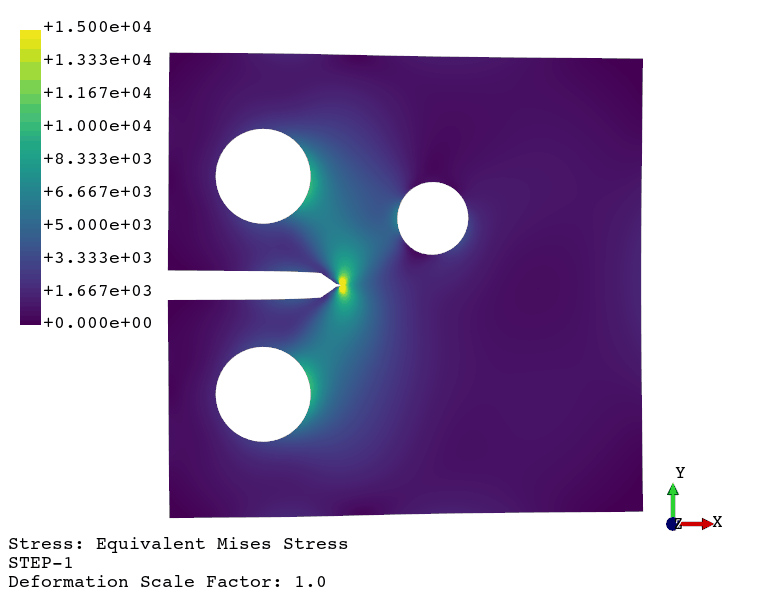Crack propagation.
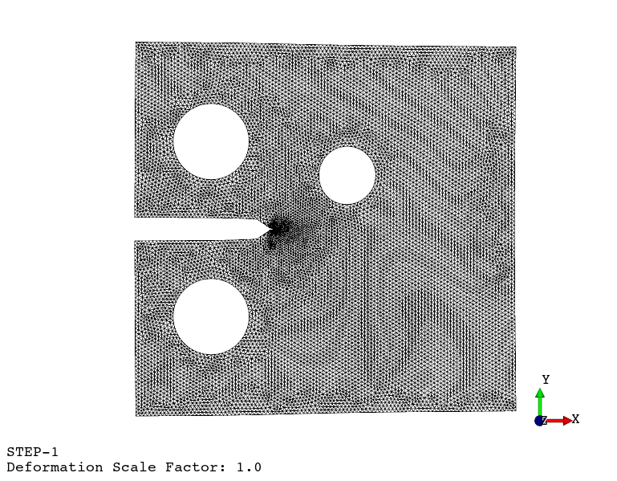Re-meshing.
Additionally, from this paper, we can compare the experimentally evaluated results against the numerical ones obtained via FEAPACK: